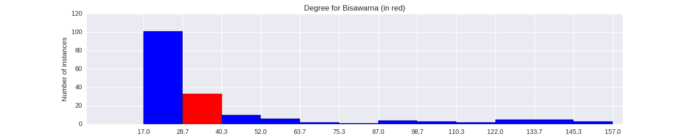

Quantiative Wayang Dictionary
Bisawarna

Terms of address: Prabu, Begawan
Type: Human
Origin: Java
Notes on the Sanskrit version: Not found in the Indian Mahabharata or Ramayana.
Alternative names: Dentawilulkrama
Description in the Javanese version: Son of Wibisana, who succeeded Rahwana to the throne of Alengka (at which point the kingdom's name changed to Singgelapura). Bisawarna eventually became king of Singgelapura as well. He died of old age and was buried in Kutarunggu, next to Ramawijaya and Wibisana. There is another character named Biswarna, who is the son of Wisrawa and Lokati. He is also known as Wisrawa and Wisrawana. His siblings are Rahwana, Kumbakarna and Sarpakenaka. This Bisawarna is killed by Desamuka.
Found in the follwing lakon (stories):
Family relationships
Mother: Triwati
Father: Wibisana
More information
Aji / Wahyu / Pusaka: Balai Kencana Soka Domas, Kereta Jatisura
Sources: Ensiklopedi Wayang Purwa, pp. 121-122; Mengenal Gambar Tokoh Wayang Purwa, p. 47
Network measurements for Bisawarna
| Measurement | Value | |
|---|---|---|
| Degree | 36.0 |  |
| Weighted Degree | 50.0 |  |
| Betweeness Centrality | 8.10118247318 |  |
| Eigenvector Centrality | 0.378427507689 |  |
{kind=link}
Characters in the same adegan as Bisawarna
| Character | Link weight |
|---|---|
| Character | Link weight |